Learning outcomes
- Understand the foundational principles of Retrieval-Augmented Generation (RAG).
- Define and differentiate between traditional keyword search and Semantic Search.
- Explain the role of Vector Databases and ChromaDB in grounding LLM responses.
- Analyze the transition from simple Q&A over single documents to enterprise-scale knowledge bases.
Topics
Semantic Search, RAG fundamentals, Vector Databases, ChromaDB, Context-based grounding, Enterprise Q&A architectures.
1. Fundamentals of RAG and Semantic Search
Retrieval-Augmented Generation (RAG) is the definitive design pattern for building Large Language Model (LLM) applications that require access to specific, up-to-date, or private information. While LLMs are trained on vast datasets, RAG allows them to "look up" information from a provided knowledge base before generating an answer, ensuring that responses are grounded in factual context.
1.1 What is RAG?
Retrieval-Augmented Generation (RAG) is an architecture that combines two main processes: Retrieval (finding relevant document fragments from a data source) and Generation (using an LLM to synthesize those fragments into a natural language response). This pattern enables systems like Q&A chatbots to query multiple documents and retrieve the most relevant information based on the meaning of the question.
Key components of a RAG system include:
- Vector Databases: Specialized storage systems optimized for meaning-based retrieval. They store data as high-dimensional vectors (embeddings) to allow for efficient similarity searches.
- ChromaDB: An open-source vector store that facilitates the creation of RAG architectures by providing a streamlined interface for indexing and querying document embeddings.
1.2 Semantic Search
At the core of RAG is Semantic Search, which focuses on the meaning of information rather than simple keyword matching. Unlike traditional search engines that fail if exact terms are missing, semantic search understands the intent behind a query. It can retrieve relevant results even if the question and the document don't share a single identical word.
Definition: Semantic search involves understanding a query's meaning, retrieving relevant fragments from a document store that match that meaning, and optionally generating a natural language answer.
2. Evolution of Q&A Chatbots
The transition from a simple prompt to a robust knowledge-based system follows a clear progression, starting with basic context injection and moving towards automated retrieval systems.
2.1 Basic Q&A over a Single Document
A simple Q&A interaction involves sending a prompt containing both the user's question and the specific context (the document) to the LLM. The chatbot then synthesizes an answer based on this provided information. This setup is effective for single-document analysis but limited by the LLM's context window.
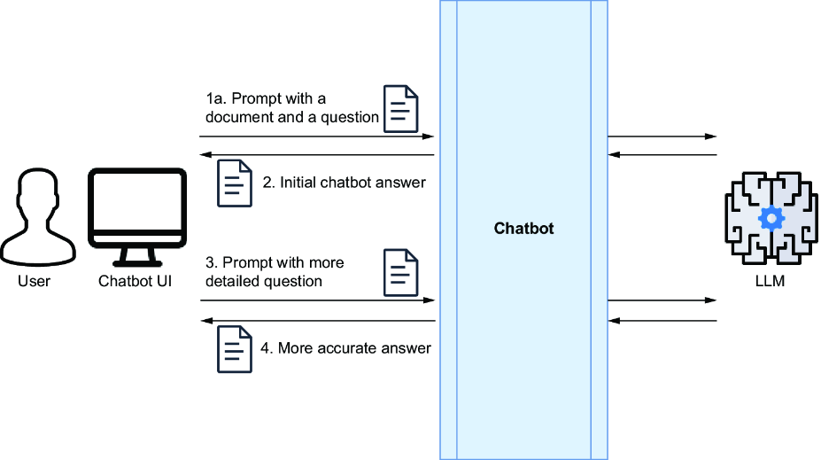
2.2 Designing for Enterprise Knowledge Bases
When dealing with enterprise-scale data—such as intranets, shared folders, and thousands of documents—it is impossible to include all content in a single prompt. An enterprise-grade chatbot must be able to autonomously access a knowledge base and retrieve only the specific fragments needed to answer a query.
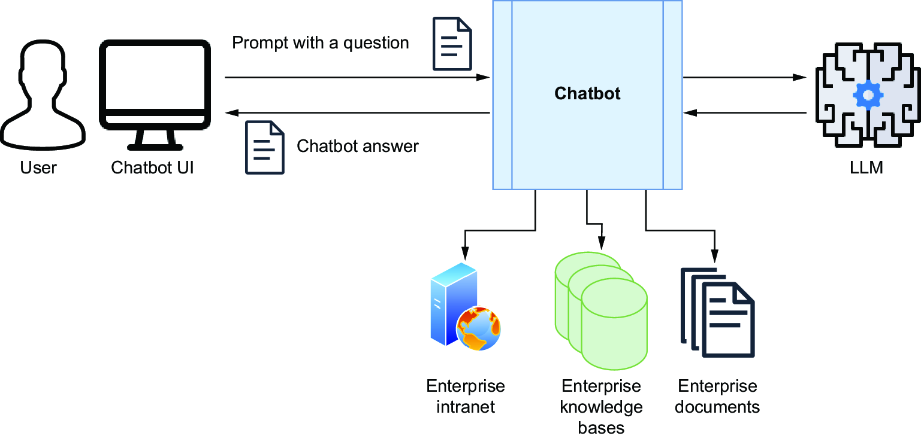
3. The RAG Design Pattern
The Retrieval-Augmented Generation (RAG) design pattern is the standard architecture for building specialized Q&A chatbots. It allows a system to provide accurate, grounded answers by combining a robust retrieval mechanism with the generative power of an LLM.
3.1 Content Ingestion Stage (Indexing)
Before a chatbot can answer questions, the knowledge base must be prepared through an ingestion pipeline. This process involves extracting text from various sources, splitting it into manageable chunks, and converting those chunks into embeddings (numerical vector representations).
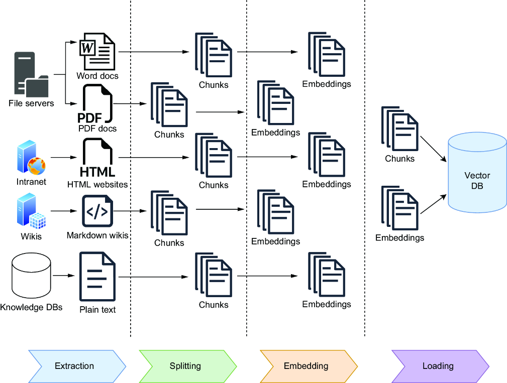
Storing both the original text and its embedding in a vector store enables the system to perform semantic lookups. This means a query for "feline" can successfully retrieve documents mentioning "cats" or "lions," even without an exact keyword match.
3.2 Question-Answering Stage (Retrieval and Generation)
Once the data is indexed, the Q&A workflow follows a multi-step process to synthesize a response:
- Retrieval: The system converts the user's question into an embedding and performs a similarity search in the vector store.
- Augmentation: The most relevant text chunks are retrieved and added to the prompt as "context."
- Generation: The LLM receives the augmented prompt (question + context) and synthesizes the final answer.
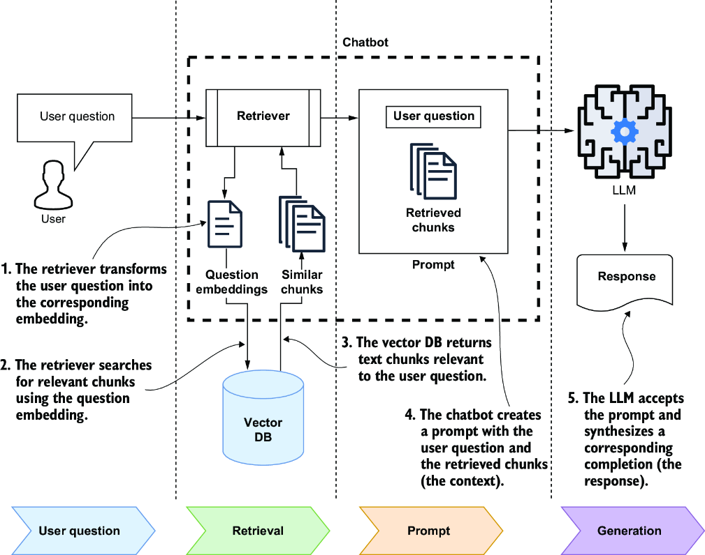
Warning: The primary goal of this architecture is to minimize hallucinations. By grounding the LLM in specific, retrieved context, we prevent the model from relying solely on its internal training data, which might be outdated or incorrect for specialized domains.
4. Vector Stores
A vector store is a storage system designed to efficiently store and query high-dimensional vectors. In the context of LLMs, these vectors (embeddings) act as numerical representations of text, capturing the underlying meaning of words and phrases.
4.1 How Vector Stores Work
Searches in vector stores are similarity searches. Unlike keyword searches, they measure the "distance" between the embedding of a user's question and the embeddings of stored text chunks. This mathematical proximity reflects semantic similarity—how closely the meanings of the pieces of text align.
Common distance functions used for these calculations include:
- Cosine Similarity: Measures the cosine of the angle between two vectors.
- Euclidean Distance: Calculates the straight-line distance between two points in space.
- Hamming Distance: Used for comparing strings of equal length.
4.2 Vector Libraries vs. Vector Databases
The ecosystem of vector storage has evolved from simple libraries to complex database systems:
- Vector Libraries (e.g., FAISS): Early systems that stored only embeddings in memory. They required external storage for the original text and lacked CRUD (Create, Read, Update, Delete) capabilities.
- Vector Databases (e.g., Pinecone, ChromaDB): Modern systems that store both the text and its corresponding embedding. They support metadata, full CRUD operations, and concurrent querying during data ingestion.
- Extended Traditional Databases: Existing systems like PostgreSQL (via PgVector) or MongoDB Atlas have added vector support, allowing embeddings to be stored alongside traditional records.
4.3 Popular Vector Store Providers
Choosing the right vector store depends on the specific requirements of the application, such as scalability, ease of use, or existing infrastructure:
- ChromaDB: An open-source, developer-friendly vector database optimized for simplicity.
- Pinecone: A fully managed, cloud-native vector database designed for high-performance enterprise applications.
- MongoDB Atlas: A popular NoSQL database that now offers integrated vector search capabilities.
- FAISS: A library for efficient similarity search and clustering of dense vectors, developed by Meta.
4.4 Understanding Semantic Distance
The effectiveness of a vector store relies on the concept of semantic distance. When text is transformed into an embedding, it is mapped to a specific point in a high-dimensional mathematical space.
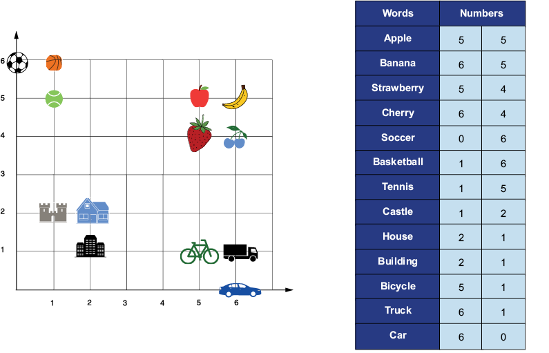
In this "embedding space," the mathematical closeness between two vectors reflects their similarity in meaning. When a user submits a query, the system calculates the distance between the query vector and the stored document vectors. It then retrieves the "top-k" results—those with the smallest semantic distance—ensuring that the AI understands context and intent rather than just matching characters.
4.5 Decoupling Embeddings and Generation
A common misconception in RAG architecture is that you must use the same provider for both the embedding model and the LLM (e.g., using only OpenAI or only Gemini). In reality, these two components are mathematically decoupled, providing significant architectural flexibility.
The Consistency Rule: While you can mix providers, you must use the exact same embedding model for both Ingestion (loading documents into the database) and Retrieval (processing the user's question). If you index your data with an OpenAI model and attempt to query it using a Gemini embedding model, the search will fail because the two models use different dimensionalities and mathematical spaces.
Why Decoupling Works: The LLM responsible for generation receives text, not vectors. Once the vector store identifies the relevant chunks based on semantic distance, it returns the original text in clear language. This text is then injected into the prompt. Because the LLM reads natural language, it doesn't need to know which model was used to find that information.
This decoupling offers a major strategic advantage: you can keep your "Knowledge Base" (Vector DB) stable and avoid the high cost of re-indexing millions of documents, even if you decide to switch your generative "brain" from OpenAI to Gemini, Claude, or a local model via Ollama.
The following table summarizes the most common pairings and recommended models as of 2024-2025:
| Provider | Common LLM (Generation) | Recommended Embedding Model | Dimensions |
|---|---|---|---|
| OpenAI | GPT-4o, GPT-4o mini | text-embedding-3-small / large | 1536 / 3072 |
| Google Gemini | Gemini 1.5 Pro / Flash | text-embedding-004 | 768 |
| Anthropic | Claude 3.5 Sonnet / Haiku | Voyage AI (voyage-3) | 1024 |
| Cohere | Command R / R+ | embed-english-v3.0 | 1024 |
| Ollama (Local) | Llama 3.1, Mistral, Phi-4 | mxbai-embed-large / nomic-embed-text | 1024 / 768 |
Note: For a comprehensive comparison of embedding model performance across various tasks, refer to the MTEB (Massive Text Embedding Benchmark) Leaderboard on Hugging Face.
5. Building a RAG System with ChromaDB
By combining a vector database like ChromaDB with a powerful language model, we can implement a custom RAG system. This setup allows the chatbot to autonomously retrieve relevant information, eliminating the need for the user to manually provide context in every prompt.
5.1 Architectural Components
The practical implementation of a RAG architecture involves orchestrating several components: the vector store (ChromaDB), the retrieval logic, and the generative model (LLM). This integration ensures that the LLM has access to the most relevant facts before generating a response.
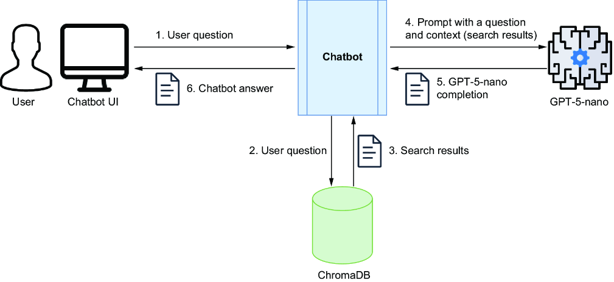
5.2 The Retrieval and Generation Loop
In a production-ready RAG system, the process is streamlined for reliability and speed:
- Querying: The chatbot transforms the natural language question into a vector and queries the collection in ChromaDB.
- Context Selection: The database returns the most semantically relevant text chunks.
- Prompt Synthesis: A reusable template combines the user's question with the retrieved chunks to create a grounded prompt.
- Execution: The LLM processes the grounded prompt to produce a factual and context-aware answer.
5.3 Using a Safer Q&A Prompt
Hallucinations can be significantly mitigated by using a well-structured and proven prompt for Q&A. A standard approach is to use a hallucination-safe RAG prompt, which explicitly instructs the model to only use the provided context and to admit when an answer is not present.
Tip: The LangChain Hub (part of LangSmith) is a popular LLM resource that is constantly updated with open-source models, prompts, and advice on various use cases. It is highly recommended to explore the hub for production-ready prompt templates.
A widely used prompt for this purpose is the rlm/rag-prompt, which provides a reliable baseline for grounded generation in RAG architectures.
6. The LangChain Object Model for RAG
One of LangChain’s biggest advantages for LLM-based applications is its ability to orchestrate communication between components such as data loaders, vector stores, and LLMs. Instead of integrating directly with each API, LangChain provides abstractions that let you swap out any component with a different provider without disrupting the overall design of your application.
6.1 Content Ingestion (Indexing) Stage
The ingestion stage focuses on preparing and storing data. LangChain models this process using several specialized classes that handle text loading, transformation, and storage.
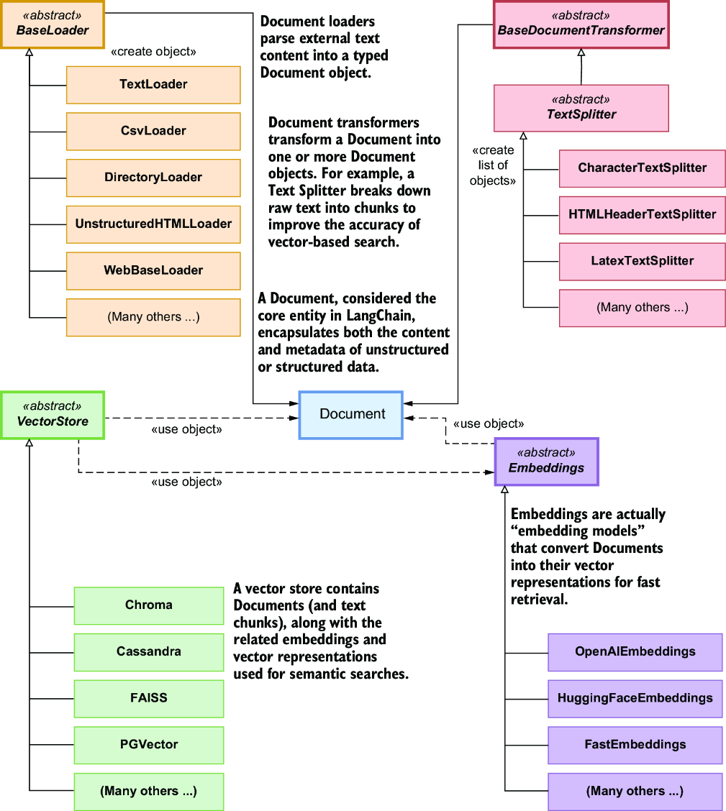
Key components in this stage include:
- Document: Models the text content and related metadata.
- BaseLoader: The standard interface for loading text from external sources into the Document model. LangChain provides many specialized implementations, including:
WikipediaLoaderfor web-based knowledge.Docx2txtLoaderfor Word documents.PyPDFLoaderfor PDF files.CSVLoaderfor structured data.TextLoaderfor simple text files.DirectoryLoaderfor batch processing entire folders.
- TextSplitter: Divides documents into smaller chunks for efficient processing. Consequently, a
TextSplitterhas the following signature:Document -> list[Document]. - Embeddings: Converts text chunks into numerical vector representations (embedding models).
- VectorStore: Stores text chunks and their embeddings for efficient retrieval.
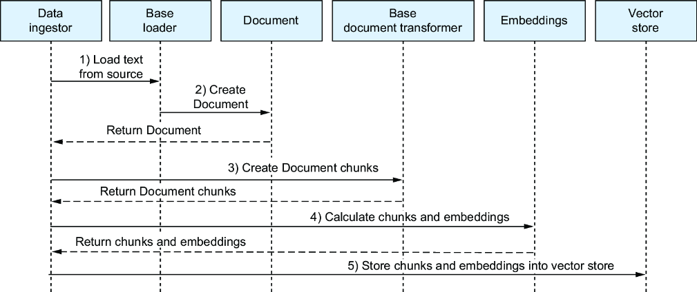
6.2 Q&A (Retrieval and Generation) Stage
In the Q&A stage, LangChain orchestrates the flow from a user's question to the final generated answer, ensuring the model is correctly grounded in the retrieved context.
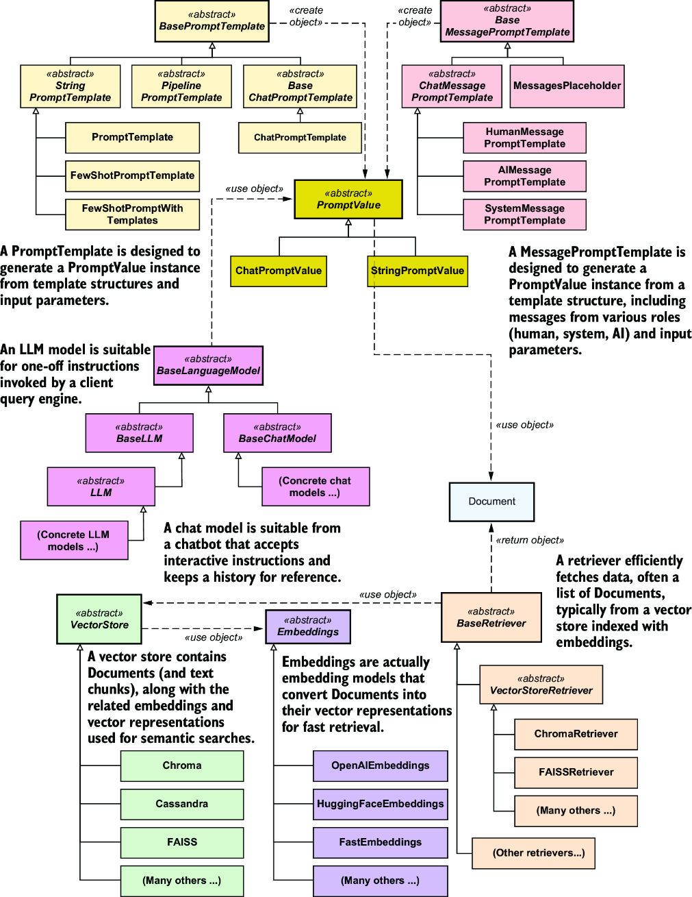
The interaction between classes ensures a seamless transition from search to synthesis:
- VectorStore: Stores and retrieves relevant text chunks.
- Retriever: Retrieves relevant text chunks from the vector store based on the similarity between the query’s embedding and the stored text embeddings.
- Embeddings: Ensures consistent embeddings for both queries and documents.
- PromptTemplate: Constructs the input for the language model, typically using the user question and a context made of retrieved text chunks.
- LanguageModel: Generates grounded responses using the provided context and query.
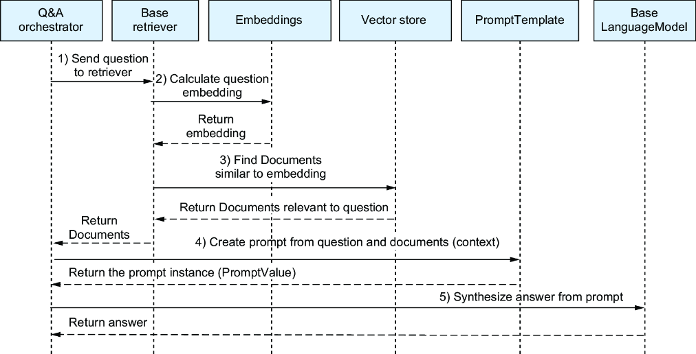
7. Implementing RAG with LangChain Chains
With LangChain, you don’t need to manually craft a prompt and configure it with the original question and the context from the vector store. You can set up a RAG chain, which will automatically instantiate and execute a prompt template by packaging all necessary parameters into a single flow.
7.1 Packaging the Prompt
A LangChain RAG chain simplifies the generation process by treating the prompt as a component that accepts dynamic inputs (context and question).
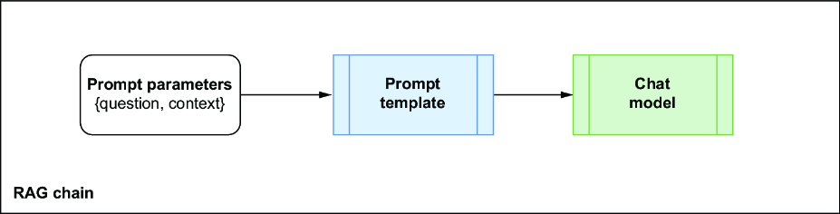
You can set up a safe prompt by explicitly defining a template or pulling one from the LangChain Hub:
from langchain_core.prompts import PromptTemplate
# Explicit definition
template = """Use the following context to answer the question.
If you don't know the answer, just say so.
{context}
Question: {question}
Helpful Answer:"""
rag_prompt = PromptTemplate.from_template(template)
# OR: Pull from LangChain Hub
from langchain import hub
rag_prompt = hub.pull("rlm/rag-prompt")7.2 The Complete RAG Chain
To complete the setup, we coordinate several components using LCEL (LangChain Expression Language). The chain orchestrates the flow from the user's question through retrieval and prompt synthesis to the final response.
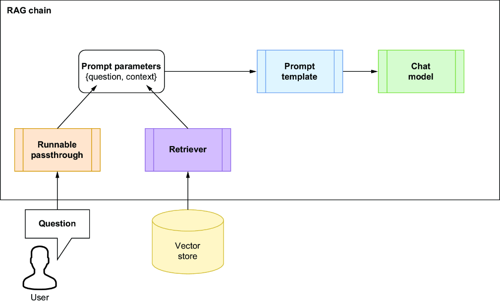
RunnablePassthrough for the user question.The final orchestration uses a dictionary to feed both the context (from the retriever) and the question into the prompt:
from langchain_core.runnables import RunnablePassthrough
rag_chain = (
{"context": retriever, "question": RunnablePassthrough()}
| rag_prompt
| chatbot
)
# Execution
answer = rag_chain.invoke("Where was Poseidonia?")8. Chatbot Memory and History
A key feature of LLM-based chatbots is their ability to remember previous exchanges. This stateful interaction allows users to refine their queries without resubmitting the entire context or previous questions.
8.1 Modeling Chat Messages
LangChain uses a structured format for messages, assigning specific roles to each part of the conversation. This is typically implemented using the ChatPromptTemplate:
- System: Sets the assistant's persona and primary instructions.
- Human: Represents the user's input/question.
- AI: The model's synthesized response.
8.2 Managing History with ChatMessageHistory
To track these messages, LangChain provides the ChatMessageHistory class. It stores the sequence of HumanMessage and AIMessage objects, which can then be injected into the prompt for subsequent interactions.
from langchain_community.chat_message_histories import ChatMessageHistory
chat_history_memory = ChatMessageHistory()
# Update history during execution
chat_history_memory.add_user_message("Where was Poseidonia?")
answer = rag_chain.invoke("Where was Poseidonia?")
chat_history_memory.add_ai_message(answer)8.3 Integrating Memory into the LCEL Chain
Using LCEL, you can dynamically feed the message history into your RAG chain. By redefining the input dictionary, the chain automatically pulls the latest messages before generation:
from langchain_core.runnables import RunnableLambda
def get_history(x):
return chat_history_memory.messages
rag_chain_with_memory = (
{
"retrieved_context": retriever,
"question": RunnablePassthrough(),
"chat_history_messages": RunnableLambda(get_history)
}
| rag_prompt
| chatbot
)9. Tracing and Monitoring with LangSmith
As LLM applications grow in complexity, debugging and monitoring become critical. LangSmith is a developer platform designed to trace every step of your LLM workflow, providing visibility into the exact inputs and outputs of each component in your chain.
9.1 Key Capabilities
- Debugging: Inspect the execution of chains to identify where errors or hallucinations occur.
- Evaluation: Use built-in evaluators to test the relevance and correctness of LLM responses.
- Monitoring: Track real-time performance and user feedback in production environments.
9.2 Enabling Tracing
To enable tracing, you must configure your environment with a LangSmith API key. This can be done by setting environment variables before running your application:
export LANGSMITH_TRACING=true
export LANGSMITH_ENDPOINT=https://api.smith.langchain.com
export LANGSMITH_PROJECT="Q&A Chatbot"
export LANGSMITH_API_KEY="<YOUR_API_KEY>"9.3 Analyzing Traces
Once enabled, every execution of your chain is captured as a "trace" in the LangSmith dashboard. This allows you to drill down into the performance of specific components like the retriever or the LLM.
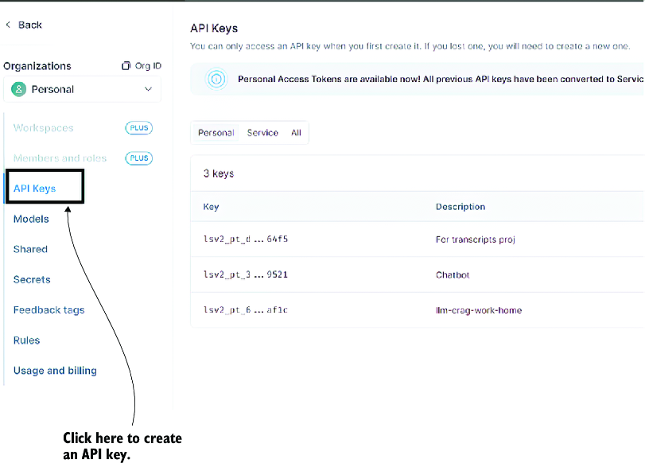
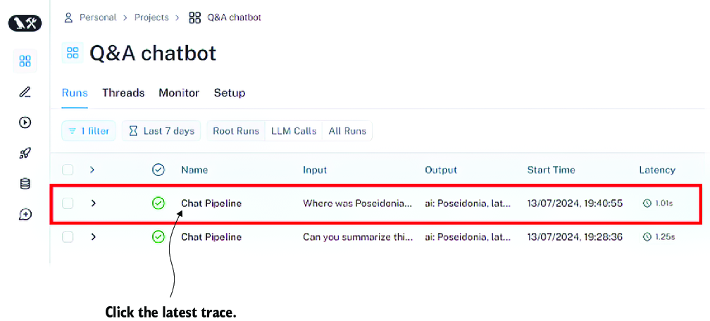
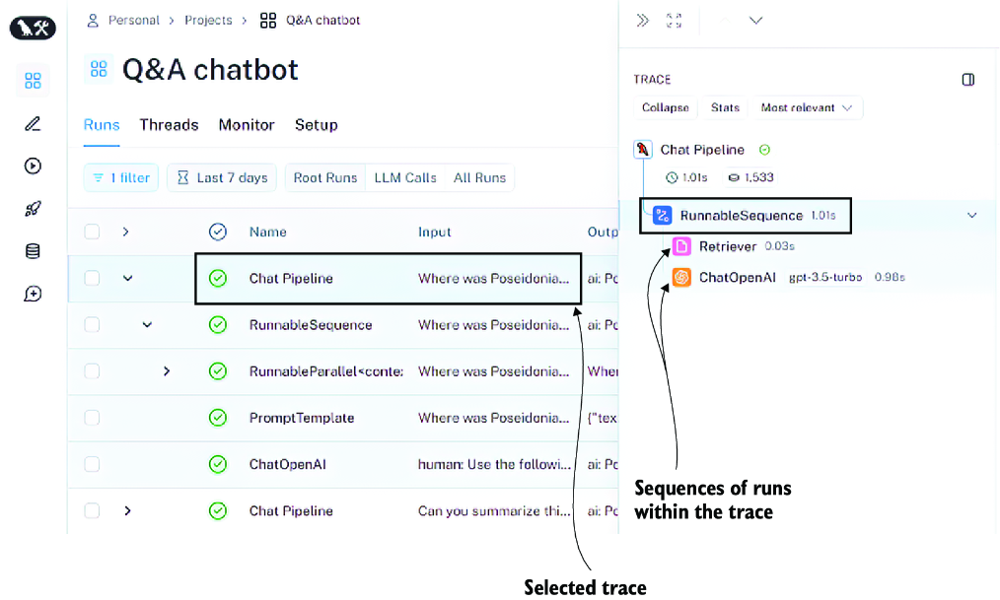
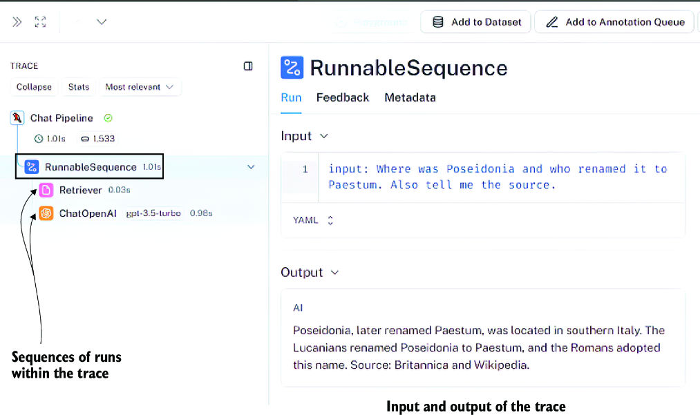
Guided lab
In this lab, you will explore a practical implementation of semantic search using ChromaDB. You will learn how to initialize a vector store, ingest documents, and perform queries based on semantic similarity.
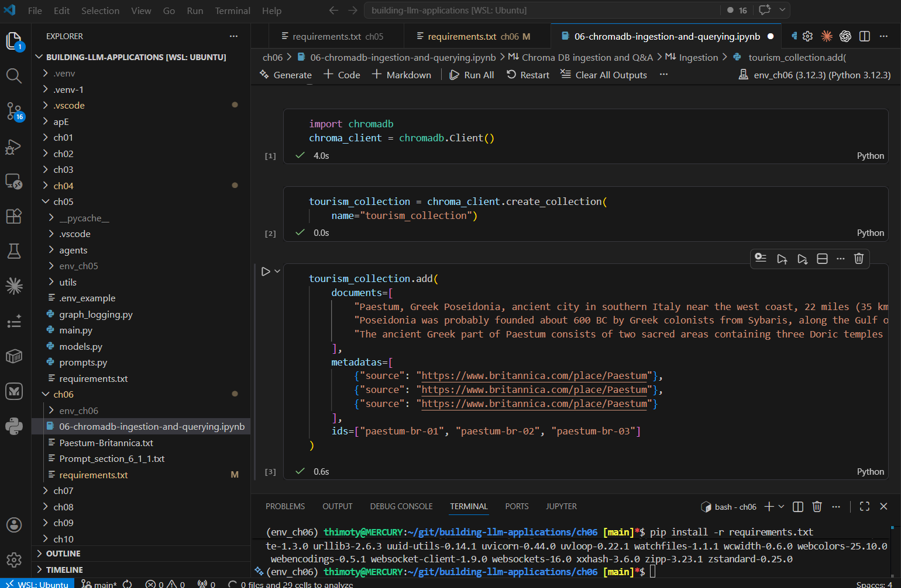
Access the materials here:
Key takeaways
- RAG combines information retrieval with LLM-based response generation.
- Semantic search identifies relevant information based on meaning and intent, surpassing keyword-based limitations.
- Vector stores like ChromaDB are essential for storing and querying document fragments efficiently.
- Grounding answers in provided context reduces hallucinations and improves accuracy.
- Vector databases offer advanced features like CRUD support and metadata storage compared to simple vector libraries.
Further reading
- Yikun Han et al.: Comprehensive Survey on Vector Database Management Systems
- Erika Shorten: Distance Metrics in Vector Search
- LangChain Hub: Open Source Prompt Repository
- Safe RAG Prompt: rlm/rag-prompt on LangChain Hub